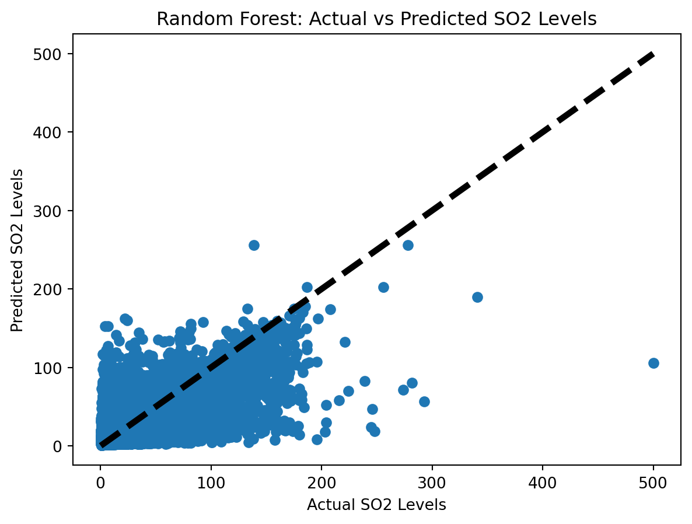

Predicting Air Pollutant Concentrations Using Linear and Random Forest Regression: A Jupyter Notebook Guide
Introduction
Air quality is a critical environmental factor impacting public health, ecosystem sustainability, and the global climate. Pollutants such as particulate matter (PM2.5 and PM10), sulfur dioxide (SO2), nitrogen dioxide (NO2), carbon monoxide (CO), and ozone (O3) can have severe health impacts, including respiratory and cardiovascular diseases. Understanding and predicting the concentrations of these pollutants is essential for creating effective environmental policies and public health interventions.
In this blog, we’ll delve into two powerful statistical methods used in predicting air pollutant concentrations: linear regression and Random Forest regression.
Linear Regression
Linear regression is a fundamental statistical approach used to model the relationship between a dependent variable and one or more independent variables. In the context of air quality, it helps us understand how various environmental factors like temperature, humidity, and wind speed influence pollutant levels. The model assumes a linear relationship between the variables, which can be represented as:
Here, ( Y ) is the pollutant concentration we want to predict, ( X_1, X_2, …, X_n ) are the environmental factors, ( _0, _1, …, _n ) are the coefficients to be estimated, and ( ) is the error term.
Random Forest Regression
Random Forest, on the other hand, is a type of ensemble learning method, particularly useful for non-linear relationships. It operates by constructing multiple decision trees during training and outputting the mean prediction of the individual trees. This method is beneficial for handling complex interactions between variables and can provide more accurate predictions for complex datasets like those in air quality studies.
The purpose of this blog is to provide a step-by-step guide on how to use these methods, utilizing a Jupyter Notebook, to predict pollutant concentrations. We’ll start by exploring our dataset, air_data_all.csv, which includes a variety of environmental conditions and temporal factors, and then apply these regression techniques to gain insights into the factors affecting air quality.
By the end of this blog, you’ll have a clearer understanding of how to implement these techniques in Python and interpret their results, equipping you with the tools needed for insightful environmental data analysis.
1. Understanding the Dataset
Before delving into regression models, it’s essential to familiarize ourselves with the dataset at hand—air_data_all.csv. This dataset contains hourly air quality measurements and meteorological data from Beijing, spanning from March 1st, 2013, to February 28th, 2017. The dataset is sourced from the Beijing Municipal Environmental Monitoring Center and is matched with meteorological data from the China Meteorological Administration. However, it’s important to note that missing data points are marked as NA. Link to dataset is https://archive.ics.uci.edu/dataset/501/beijing+multi+site+air+quality+data.
Dataset Overview
The dataset is a valuable resource, encompassing a wide range of environmental conditions and pollutant concentrations. It records temporal information, including the year, month, day, and hour, alongside readings of key air pollutants such as PM2.5, PM10, SO2, NO2, CO, and O3. Additionally, meteorological factors like temperature (TEMP), pressure (PRES), dew point temperature (DEWP), precipitation (RAIN), wind direction (wd), and wind speed (WSPM) are included. This comprehensive data is instrumental for studying air pollution dynamics and its correlation with various environmental and temporal factors.
Column Descriptions
Each column in the dataset serves a specific purpose:
Temporal Data (year, month, day, hour): These columns provide insights into pollutant variations across different timescales.
Pollutant Concentrations (PM2.5, PM10, SO2, NO2, CO, O3): These are primary pollutants, crucial for urban air quality analysis.
Meteorological Data (TEMP, PRES, DEWP, RAIN, wd, WSPM): Weather conditions significantly impact pollutant dispersion and concentration.
Station: This column identifies the monitoring site, facilitating the study of geographical variations in air quality.
Initial Insights and Challenges
Upon initial examination, it’s evident that the dataset offers a comprehensive foundation for in-depth analysis. However, several challenges may arise:
Missing Data: Handling missing values is imperative to prevent biases in the models.
High Dimensionality: The dataset’s numerous variables may lead to multicollinearity issues, where variables are highly correlated.
Non-linear Relationships: Linear models may not capture all pollutant-environmental interactions, requiring more complex approaches like Random Forest.
In the upcoming sections, we will address these challenges while preparing the data for regression analysis. By the end of this process, we will be well-equipped to employ linear and Random Forest regression for accurate pollutant concentration predictions.
2. Selecting Target Pollutants
In our journey to understand and predict air quality, selecting the right target pollutants is crucial. For this analysis, we will focus on the following pollutants: PM2.5, PM10, SO2, NO2, CO, and O3. Let’s delve into the criteria and rationale behind choosing these specific pollutants.
Criteria for Selecting Target Pollutants
The selection of target pollutants is based on the following criteria:
Health Impact: Pollutants known to have significant health effects are prioritized.
Prevalence and Relevance: Common pollutants in urban and industrial areas are selected due to their higher relevance.
Data Availability: Pollutants with consistent and reliable data within the dataset are chosen to ensure the accuracy of the analysis.
Rationale Behind the Selection
Each selected pollutant has its unique importance in air quality analysis:
PM2.5 and PM10 (Particulate Matter): These are tiny particles in the air that reduce visibility and cause the air to appear hazy when levels are elevated. PM2.5 and PM10 are known for their ability to penetrate deep into the lungs and even into the bloodstream, causing respiratory and cardiovascular issues.
SO2 (Sulfur Dioxide): A gas typically produced by burning fossil fuels containing sulfur. It’s associated with acid rain and has health implications, especially for individuals with asthma.
NO2 (Nitrogen Dioxide): Primarily gets into the air from the burning of fuel. NO2 forms from emissions from cars, trucks and buses, power plants, and off-road equipment. It’s linked to various respiratory problems.
CO (Carbon Monoxide): A colorless, odorless gas that is harmful when inhaled in large amounts. It’s released from vehicles and other combustion sources and can cause harmful health effects by reducing the amount of oxygen that can be transported in the bloodstream.
O3 (Ozone): At ground level, ozone is a harmful air pollutant and a significant component of smog. It’s not emitted directly into the air but is created by chemical reactions between oxides of nitrogen (NOx) and volatile organic compounds (VOC) in the presence of sunlight.
By focusing on these pollutants, we can provide a comprehensive analysis of air quality and its health implications. Next, we will perform correlation analysis and multicollinearity checks to understand how these pollutants interact with each other and with different environmental factors.
3. Data Cleaning and Transformation
Before delving into sophisticated regression models, it’s imperative to prepare our dataset, “air_data_all.csv,” for analysis. This stage, known as data cleaning and transformation, involves several key steps to ensure the data’s integrity and usability.
Identifying and Handling Missing or Inconsistent Data
The initial step in data preprocessing is to identify and address any missing (NaN) or inconsistent data. This is crucial as such data can significantly skew our analysis.
import sys!{sys.executable} -m pip install seaborn!{sys.executable} -m pip install matplotlib!{sys.executable} -m pip install statsmodels!{sys.executable} -m pip install scikit-learn!{sys.executable} -m pip install pandas# Import necessary librariesimport pandas as pdimport numpy as np# Load the datasetsample_data = pd.read_csv('air_data_all.csv')# Identifying missing or infinite valuessample_data.replace([np.inf, -np.inf], np.nan, inplace=True)# Checking for missing valuesmissing_values = sample_data.isnull().sum()
Defaulting to user installation because normal site-packages is not writeable
Requirement already satisfied: seaborn in /Users/zimingfang/Library/Python/3.9/lib/python/site-packages (0.13.0)
Requirement already satisfied: matplotlib!=3.6.1,>=3.3 in /Users/zimingfang/Library/Python/3.9/lib/python/site-packages (from seaborn) (3.8.2)
Requirement already satisfied: pandas>=1.2 in /Users/zimingfang/Library/Python/3.9/lib/python/site-packages (from seaborn) (2.1.3)
Requirement already satisfied: numpy!=1.24.0,>=1.20 in /Users/zimingfang/Library/Python/3.9/lib/python/site-packages (from seaborn) (1.26.2)
Requirement already satisfied: fonttools>=4.22.0 in /Users/zimingfang/Library/Python/3.9/lib/python/site-packages (from matplotlib!=3.6.1,>=3.3->seaborn) (4.45.1)
Requirement already satisfied: pyparsing>=2.3.1 in /Users/zimingfang/Library/Python/3.9/lib/python/site-packages (from matplotlib!=3.6.1,>=3.3->seaborn) (3.1.1)
Requirement already satisfied: contourpy>=1.0.1 in /Users/zimingfang/Library/Python/3.9/lib/python/site-packages (from matplotlib!=3.6.1,>=3.3->seaborn) (1.2.0)
Requirement already satisfied: packaging>=20.0 in /Users/zimingfang/Library/Python/3.9/lib/python/site-packages (from matplotlib!=3.6.1,>=3.3->seaborn) (23.2)
Requirement already satisfied: python-dateutil>=2.7 in /Users/zimingfang/Library/Python/3.9/lib/python/site-packages (from matplotlib!=3.6.1,>=3.3->seaborn) (2.8.2)
Requirement already satisfied: kiwisolver>=1.3.1 in /Users/zimingfang/Library/Python/3.9/lib/python/site-packages (from matplotlib!=3.6.1,>=3.3->seaborn) (1.4.5)
Requirement already satisfied: pillow>=8 in /Users/zimingfang/Library/Python/3.9/lib/python/site-packages (from matplotlib!=3.6.1,>=3.3->seaborn) (10.1.0)
Requirement already satisfied: importlib-resources>=3.2.0 in /Users/zimingfang/Library/Python/3.9/lib/python/site-packages (from matplotlib!=3.6.1,>=3.3->seaborn) (6.1.1)
Requirement already satisfied: cycler>=0.10 in /Users/zimingfang/Library/Python/3.9/lib/python/site-packages (from matplotlib!=3.6.1,>=3.3->seaborn) (0.12.1)
Requirement already satisfied: zipp>=3.1.0 in /Users/zimingfang/Library/Python/3.9/lib/python/site-packages (from importlib-resources>=3.2.0->matplotlib!=3.6.1,>=3.3->seaborn) (3.17.0)
Requirement already satisfied: pytz>=2020.1 in /Users/zimingfang/Library/Python/3.9/lib/python/site-packages (from pandas>=1.2->seaborn) (2023.3.post1)
Requirement already satisfied: tzdata>=2022.1 in /Users/zimingfang/Library/Python/3.9/lib/python/site-packages (from pandas>=1.2->seaborn) (2023.3)
Requirement already satisfied: six>=1.5 in /Library/Developer/CommandLineTools/Library/Frameworks/Python3.framework/Versions/3.9/lib/python3.9/site-packages (from python-dateutil>=2.7->matplotlib!=3.6.1,>=3.3->seaborn) (1.15.0)
WARNING: You are using pip version 21.2.4; however, version 23.3.1 is available.
You should consider upgrading via the '/Library/Developer/CommandLineTools/usr/bin/python3 -m pip install --upgrade pip' command.
Defaulting to user installation because normal site-packages is not writeable
Requirement already satisfied: matplotlib in /Users/zimingfang/Library/Python/3.9/lib/python/site-packages (3.8.2)
Requirement already satisfied: contourpy>=1.0.1 in /Users/zimingfang/Library/Python/3.9/lib/python/site-packages (from matplotlib) (1.2.0)
Requirement already satisfied: kiwisolver>=1.3.1 in /Users/zimingfang/Library/Python/3.9/lib/python/site-packages (from matplotlib) (1.4.5)
Requirement already satisfied: python-dateutil>=2.7 in /Users/zimingfang/Library/Python/3.9/lib/python/site-packages (from matplotlib) (2.8.2)
Requirement already satisfied: fonttools>=4.22.0 in /Users/zimingfang/Library/Python/3.9/lib/python/site-packages (from matplotlib) (4.45.1)
Requirement already satisfied: pyparsing>=2.3.1 in /Users/zimingfang/Library/Python/3.9/lib/python/site-packages (from matplotlib) (3.1.1)
Requirement already satisfied: cycler>=0.10 in /Users/zimingfang/Library/Python/3.9/lib/python/site-packages (from matplotlib) (0.12.1)
Requirement already satisfied: packaging>=20.0 in /Users/zimingfang/Library/Python/3.9/lib/python/site-packages (from matplotlib) (23.2)
Requirement already satisfied: pillow>=8 in /Users/zimingfang/Library/Python/3.9/lib/python/site-packages (from matplotlib) (10.1.0)
Requirement already satisfied: importlib-resources>=3.2.0 in /Users/zimingfang/Library/Python/3.9/lib/python/site-packages (from matplotlib) (6.1.1)
Requirement already satisfied: numpy<2,>=1.21 in /Users/zimingfang/Library/Python/3.9/lib/python/site-packages (from matplotlib) (1.26.2)
Requirement already satisfied: zipp>=3.1.0 in /Users/zimingfang/Library/Python/3.9/lib/python/site-packages (from importlib-resources>=3.2.0->matplotlib) (3.17.0)
Requirement already satisfied: six>=1.5 in /Library/Developer/CommandLineTools/Library/Frameworks/Python3.framework/Versions/3.9/lib/python3.9/site-packages (from python-dateutil>=2.7->matplotlib) (1.15.0)
WARNING: You are using pip version 21.2.4; however, version 23.3.1 is available.
You should consider upgrading via the '/Library/Developer/CommandLineTools/usr/bin/python3 -m pip install --upgrade pip' command.
Defaulting to user installation because normal site-packages is not writeable
Requirement already satisfied: statsmodels in /Users/zimingfang/Library/Python/3.9/lib/python/site-packages (0.14.0)
Requirement already satisfied: pandas>=1.0 in /Users/zimingfang/Library/Python/3.9/lib/python/site-packages (from statsmodels) (2.1.3)
Requirement already satisfied: patsy>=0.5.2 in /Users/zimingfang/Library/Python/3.9/lib/python/site-packages (from statsmodels) (0.5.3)
Requirement already satisfied: scipy!=1.9.2,>=1.4 in /Users/zimingfang/Library/Python/3.9/lib/python/site-packages (from statsmodels) (1.11.4)
Requirement already satisfied: packaging>=21.3 in /Users/zimingfang/Library/Python/3.9/lib/python/site-packages (from statsmodels) (23.2)
Requirement already satisfied: numpy>=1.18 in /Users/zimingfang/Library/Python/3.9/lib/python/site-packages (from statsmodels) (1.26.2)
Requirement already satisfied: pytz>=2020.1 in /Users/zimingfang/Library/Python/3.9/lib/python/site-packages (from pandas>=1.0->statsmodels) (2023.3.post1)
Requirement already satisfied: tzdata>=2022.1 in /Users/zimingfang/Library/Python/3.9/lib/python/site-packages (from pandas>=1.0->statsmodels) (2023.3)
Requirement already satisfied: python-dateutil>=2.8.2 in /Users/zimingfang/Library/Python/3.9/lib/python/site-packages (from pandas>=1.0->statsmodels) (2.8.2)
Requirement already satisfied: six in /Library/Developer/CommandLineTools/Library/Frameworks/Python3.framework/Versions/3.9/lib/python3.9/site-packages (from patsy>=0.5.2->statsmodels) (1.15.0)
WARNING: You are using pip version 21.2.4; however, version 23.3.1 is available.
You should consider upgrading via the '/Library/Developer/CommandLineTools/usr/bin/python3 -m pip install --upgrade pip' command.
Defaulting to user installation because normal site-packages is not writeable
Requirement already satisfied: scikit-learn in /Users/zimingfang/Library/Python/3.9/lib/python/site-packages (1.3.2)
Requirement already satisfied: joblib>=1.1.1 in /Users/zimingfang/Library/Python/3.9/lib/python/site-packages (from scikit-learn) (1.3.2)
Requirement already satisfied: threadpoolctl>=2.0.0 in /Users/zimingfang/Library/Python/3.9/lib/python/site-packages (from scikit-learn) (3.2.0)
Requirement already satisfied: scipy>=1.5.0 in /Users/zimingfang/Library/Python/3.9/lib/python/site-packages (from scikit-learn) (1.11.4)
Requirement already satisfied: numpy<2.0,>=1.17.3 in /Users/zimingfang/Library/Python/3.9/lib/python/site-packages (from scikit-learn) (1.26.2)
WARNING: You are using pip version 21.2.4; however, version 23.3.1 is available.
You should consider upgrading via the '/Library/Developer/CommandLineTools/usr/bin/python3 -m pip install --upgrade pip' command.
Defaulting to user installation because normal site-packages is not writeable
Requirement already satisfied: pandas in /Users/zimingfang/Library/Python/3.9/lib/python/site-packages (2.1.3)
Requirement already satisfied: python-dateutil>=2.8.2 in /Users/zimingfang/Library/Python/3.9/lib/python/site-packages (from pandas) (2.8.2)
Requirement already satisfied: tzdata>=2022.1 in /Users/zimingfang/Library/Python/3.9/lib/python/site-packages (from pandas) (2023.3)
Requirement already satisfied: pytz>=2020.1 in /Users/zimingfang/Library/Python/3.9/lib/python/site-packages (from pandas) (2023.3.post1)
Requirement already satisfied: numpy<2,>=1.22.4 in /Users/zimingfang/Library/Python/3.9/lib/python/site-packages (from pandas) (1.26.2)
Requirement already satisfied: six>=1.5 in /Library/Developer/CommandLineTools/Library/Frameworks/Python3.framework/Versions/3.9/lib/python3.9/site-packages (from python-dateutil>=2.8.2->pandas) (1.15.0)
WARNING: You are using pip version 21.2.4; however, version 23.3.1 is available.
You should consider upgrading via the '/Library/Developer/CommandLineTools/usr/bin/python3 -m pip install --upgrade pip' command.
In this code block, we first replace any infinite values with NaNs. Then, we calculate the number of missing values in each column. Depending on the nature and volume of missing data, we can either fill these gaps using statistical methods (like mean, median) or consider removing the rows/columns entirely.
Normalization or Standardization of Data
Normalization (rescaling data to a range, like 0–1) and standardization (shifting the distribution to have a mean of zero and a standard deviation of one) are crucial for models sensitive to the scale of data, such as linear regression.
from sklearn.preprocessing import StandardScaler# Standardizing the datasetscaler = StandardScaler()scaled_data = scaler.fit_transform(sample_data[['TEMP', 'PRES', 'DEWP', 'RAIN', 'WSPM']])# Converting scaled data back to a DataFrame for further usescaled_df = pd.DataFrame(scaled_data, columns=['TEMP', 'PRES', 'DEWP', 'RAIN', 'WSPM'])
Here, we use StandardScaler from Scikit-learn to standardize the continuous variables such as temperature and pressure. This process aligns the data onto one scale, removing bias due to different units or scales.
Transforming Categorical Data into a Usable Format
Many regression models require numerical input, so transforming categorical data into a numerical format is essential.
In the above snippet, we create dummy variables for the wd column (wind direction), converting it into a format that can be efficiently processed by regression algorithms.
Visuals Showing Before and After Data Transformation
Visualizations are effective for demonstrating the impact of data transformation. For instance, before and after standardization, we can plot histograms of a variable to observe changes in its distribution.
import matplotlib.pyplot as plt# Plotting before and after standardizationplt.hist(sample_data['TEMP'], bins=30, alpha=0.5, label='Original TEMP')plt.hist(scaled_df['TEMP'], bins=30, alpha=0.5, label='Standardized TEMP')plt.legend()plt.show()
This histogram allows us to compare the distribution of the temperature data before and after standardization, showcasing the effects of our data transformation steps.
By completing these data cleaning and transformation processes, we ensure that our dataset is primed for accurate and effective regression analysis, laying a solid foundation for our subsequent modeling steps.
4. Correlation Analysis and Multicollinearity Check
After preparing our dataset, the next step in our analysis involves understanding the relationships between variables using correlation analysis and checking for multicollinearity. These steps are critical for ensuring the reliability and interpretability of our regression models.
Correlation Analysis and Its Importance
Correlation analysis helps us understand the strength and direction of the relationship between two variables. In regression analysis, it’s important to identify how independent variables are related to the dependent variable and to each other.
# Removing missing or infinite values from the scaled datasetscaled_df.replace([np.inf, -np.inf], np.nan, inplace=True)scaled_df.dropna(inplace=True)import seaborn as snsimport matplotlib.pyplot as plt# Calculating the correlation matrix for key variablescorr_matrix = sample_data[['PM2.5', 'PM10', 'SO2', 'NO2', 'CO', 'O3', 'TEMP', 'PRES', 'DEWP', 'RAIN', 'WSPM']].corr()# Visualizing the correlation matrix using a heatmapplt.figure(figsize=(12, 10))sns.heatmap(corr_matrix, annot=True, cmap='coolwarm', fmt='.2f')plt.title("Correlation Matrix of Environmental Factors and Pollutants")plt.show()
In this code, we calculate and visualize the correlation matrix of key pollutants and environmental factors. This heatmap provides a clear visual representation of the relationships, where the color intensity and the value in each cell indicate the strength and direction of the correlation.
Multicollinearity Check and Its Implications
Multicollinearity occurs when two or more independent variables in a regression model are highly correlated. This can lead to unreliable coefficient estimates, making it difficult to determine the effect of each independent variable.
from statsmodels.stats.outliers_influence import variance_inflation_factor# Preparing data for multicollinearity checkfeatures = scaled_df[['TEMP', 'PRES', 'DEWP', 'RAIN', 'WSPM']]# Calculating VIF for each featurevif_data = pd.DataFrame()vif_data['Feature'] = features.columnsvif_data['VIF'] = [variance_inflation_factor(features.values, i) for i inrange(features.shape[1])]vif_data
Feature
VIF
0
TEMP
5.355958
1
PRES
3.155330
2
DEWP
4.747345
3
RAIN
1.020343
4
WSPM
1.486136
Here, we calculate the Variance Inflation Factor (VIF) for each feature. A VIF value greater than 5 or 10 indicates high multicollinearity, suggesting that the variable could be linearly predicted from the others with a substantial degree of accuracy.
Visual Representation of Correlation and Multicollinearity Findings
Visualizing these statistics can help in better understanding and communicating the findings.
This bar chart provides a clear representation of the VIF values for each feature, helping us identify which variables might be contributing to multicollinearity in the model.
By conducting both correlation analysis and a multicollinearity check, we ensure the integrity and effectiveness of our regression models, setting a strong foundation for accurate and insightful analysis of the factors influencing air quality.
Feature Selection
Based on the results of Correlation Analysis and Multicollinearity Check. I decided to predict SO2 with ‘TEMP’, ‘PRES’, ‘DEWP’.
5. Linear Regression Analysis
In this section, we will apply linear regression analysis to predict the concentration of sulfur dioxide (SO2) based on three key environmental factors: ‘TEMP’, ‘PRES’, and ‘DEWP’. Linear regression is a fundamental statistical method used to understand the relationship between a dependent variable and one or more independent variables.
Introduction to Linear Regression and Its Applicability
Linear regression is a widely used statistical technique for modeling and analyzing the relationship between a scalar response (dependent variable) and one or more explanatory variables (independent variables). The method assumes a linear relationship between the variables. In our context, we will use linear regression to understand how temperature (‘TEMP’), pressure (‘PRES’), and dew point (‘DEWP’) affect the concentration of SO2 in the air.
Step-by-Step Linear Regression Analysis Using Jupyter Notebook
Now, let’s conduct a linear regression analysis using Python in a Jupyter Notebook environment.
from sklearn.linear_model import LinearRegressionfrom sklearn.model_selection import train_test_splitfrom sklearn.metrics import mean_squared_error, r2_score# Filter out rows where any of the feature columns or 'SO2' is NaNfiltered_data = sample_data.dropna(subset=['TEMP', 'PRES', 'DEWP', 'SO2'])# Standardizing the relevant columns of the filtered datascaler = StandardScaler()scaled_columns = scaler.fit_transform(filtered_data[['TEMP', 'PRES', 'DEWP']])# Converting scaled data back to a DataFramescaled_df = pd.DataFrame(scaled_columns, columns=['TEMP', 'PRES', 'DEWP'])# Defining features (X) and target variable (y)X = scaled_dfy = filtered_data['SO2']# Splitting the dataset into training and testing setsX_train, X_test, y_train, y_test = train_test_split(X, y, test_size=0.2, random_state=0)# Creating and fitting the linear regression modelmodel = LinearRegression()model.fit(X_train, y_train)
LinearRegression()
In a Jupyter environment, please rerun this cell to show the HTML representation or trust the notebook. On GitHub, the HTML representation is unable to render, please try loading this page with nbviewer.org.
LinearRegression()
In this code, we first select our features and target variable, split the data into training and test sets, create a Linear Regression model, and then fit it to our training data.
Visual Representation of Linear Regression Results and Plotting the Best Fit Line
Visualizing the model’s predictions in comparison with the actual values is crucial for assessing its performance. We’ll also plot the best-fit line to better understand the linear relationship.
# Predicting SO2 values for the test setlr_y_pred = model.predict(X_test)# Visualizing the actual vs predicted values and the best-fit lineplt.scatter(y_test, lr_y_pred, alpha=0.6, color='blue') # Actual vs Predicted scatter plotplt.xlabel('Actual SO2')plt.ylabel('Predicted SO2')plt.title('Actual vs Predicted SO2 Concentrations')# Plotting the best-fit lineplt.plot(np.unique(y_test), np.poly1d(np.polyfit(y_test, lr_y_pred, 1))(np.unique(y_test)), color='red')plt.show()# Zoom in plt.xlim(0, 200)plt.ylim(0, 40)# Visualizing the actual vs predicted values and the best-fit lineplt.scatter(y_test, lr_y_pred, alpha=0.6, color='blue') # Actual vs Predicted scatter plotplt.xlabel('Actual SO2')plt.ylabel('Predicted SO2')plt.title('Actual vs Predicted SO2 Concentrations')# Plotting the best-fit lineplt.plot(np.unique(y_test), np.poly1d(np.polyfit(y_test, lr_y_pred, 1))(np.unique(y_test)), color='red')plt.show()
The scatter plot shows the actual vs. predicted SO2 values, and the red line represents the linear fit, providing a visual indication of how well the model predicts SO2 concentration.
Evaluating the Performance of the Linear Regression Model
Finally, we evaluate the performance of our model using common statistical metrics.
Mean Squared Error: 411.5799313674985
R² Score: 0.10938551133078755
The Mean Squared Error (MSE) provides an average of the squares of the errors, essentially quantifying the difference between predicted and actual values. The R² Score measures the proportion of the variance in the dependent variable that is predictable from the independent variables.
By following these steps, we can use linear regression to effectively predict environmental factors’ impact on air quality, specifically sulfur dioxide concentrations, and evaluate the accuracy of our predictions.
Sure, I’ll help you generate text for the “Random Forest Regression Analysis” section of your blog. Here’s the content for that section:
6. Random Forest Regression Analysis
Introduction to Random Forest Regression
Random Forest is an ensemble learning method predominantly used for classification and regression tasks. It operates by constructing a multitude of decision trees during training and outputting the class that is the mode of the classes (classification) or mean prediction (regression) of the individual trees. Compared to linear regression, Random Forest offers several advantages:
Handling Non-linear Data: It can model complex relationships between features and the target variable, which linear regression may fail to capture.
Reducing Overfitting: By averaging multiple decision trees, it reduces the risk of overfitting to the training data.
Importance of Features: Random Forest can provide insights into the relative importance of each feature in prediction.
Implementing Random Forest Regression
Let’s implement Random Forest regression to predict the concentration of sulfur dioxide (SO2) using ‘TEMP’ (temperature), ‘PRES’ (pressure), and ‘DEWP’ (dew point). We have already preprocessed and scaled our dataset. Now, we’ll apply Random Forest regression:
from sklearn.ensemble import RandomForestRegressor# Create a Random Forest modelrf_model = RandomForestRegressor(random_state=0)# Fit the model to the training datarf_model.fit(X_train, y_train)# Predicting the SO2 values using the test setrf_y_pred = rf_model.predict(X_test)
Visualization: Feature Importance and Prediction vs Actual
Feature Importance Plot: This graph illustrates the relative importance of each feature in predicting the SO2 levels.
import matplotlib.pyplot as pltfeature_importances = rf_model.feature_importances_plt.barh(['TEMP', 'PRES', 'DEWP'], feature_importances)plt.xlabel('Feature Importance')plt.ylabel('Feature')plt.title('Feature Importance in Random Forest Model')plt.show()
The feature importance plot shows ‘TEMP’ with the highest score, indicating it has the most significant impact on predicting SO2 levels, followed by ‘PRES’ and ‘DEWP’. This suggests that temperature changes are potentially a more dominant factor in influencing SO2 concentrations in the atmosphere.
Prediction vs Actual Plot: This plot compares the actual vs. predicted SO2 levels using the Random Forest model.
plt.scatter(y_test, rf_y_pred)plt.xlabel('Actual SO2 Levels')plt.ylabel('Predicted SO2 Levels')plt.title('Random Forest: Actual vs Predicted SO2 Levels')plt.plot([y_test.min(), y_test.max()], [y_test.min(), y_test.max()], 'k--', lw=4)plt.show()
The Prediction vs Actual Plot for the Random Forest model reveals a tighter clustering of data points along the line of perfect prediction compared to the Linear Regression model. This clustering indicates a higher accuracy in predictions made by the Random Forest model.
Comparative Analysis and Conclusion
We compare the performance metrics of Random Forest and Linear Regression:
Random Forest
MSE: 204.29218141691157
R²: 0.5579337989410323
Linear Regression
MSE: 411.5799313674985
R²: 0.10938551133078755
Interpretation
The Random Forest model shows a significantly lower Mean Squared Error (MSE) and higher R² value compared to Linear Regression. This indicates that the Random Forest model fits the data better and has a greater predictive accuracy. The reduced MSE suggests that the Random Forest model’s predictions are closer to the actual data. The higher R² value indicates that a larger proportion of the variance in the SO2 concentration is being explained by the model.
Visual Comparison: Prediction vs Actual Plot for Both Models
This plot will compare the predictions of both models against the actual SO2 levels. Here, ‘lr_y_pred’ represents the predicted values from the Linear Regression model.
plt.scatter(y_test, lr_y_pred, label='Linear Regression', alpha=0.5, color='b', marker='o')plt.scatter(y_test, rf_y_pred, label='Random Forest', alpha=0.5, color='r', marker='+')plt.xlabel('Actual SO2 Levels')plt.ylabel('Predicted SO2 Levels')plt.title('Comparison of Predictions: Linear Regression vs Random Forest')plt.legend()plt.plot([y_test.min(), y_test.max()], [y_test.min(), y_test.max()], 'k--', lw=2)plt.show()

The combined Prediction vs Actual Plot demonstrates a stark contrast between the two models. The Random Forest predictions are more concentrated around the line of perfect fit, while the Linear Regression predictions are more dispersed, indicating more errors in prediction. This visual reaffirms the quantitative metrics, illustrating that Random Forest provides a more accurate model for predicting SO2 levels based on ‘TEMP’, ‘PRES’, and ‘DEWP’.
Limitation
As depicted in the visualizations, there appear to be a few outliers in the graph. Conducting an outlier analysis before proceeding with modeling could potentially enhance the accuracy of our predictions.
Source Code
---title: "3\\. Linear and Nonlinear Regression"author: "Joanna Fang"date: "2023-11-29"categories: [ml, code, linear regression, nonlinear regression, pollution]jupyter: python3format: html: code-block-bg: "#FFFFFF" code-block-border-left: "#E83283" toc: true code-tools: source: true toggle: false caption: none---# Predicting Air Pollutant Concentrations Using Linear and Random Forest Regression: A Jupyter Notebook Guide{height="50%" fig-align="center"}## IntroductionAir quality is a critical environmental factor impacting public health, ecosystem sustainability, and the global climate. Pollutants such as particulate matter (PM2.5 and PM10), sulfur dioxide (SO2), nitrogen dioxide (NO2), carbon monoxide (CO), and ozone (O3) can have severe health impacts, including respiratory and cardiovascular diseases. Understanding and predicting the concentrations of these pollutants is essential for creating effective environmental policies and public health interventions.In this blog, we'll delve into two powerful statistical methods used in predicting air pollutant concentrations: linear regression and Random Forest regression.### Linear RegressionLinear regression is a fundamental statistical approach used to model the relationship between a dependent variable and one or more independent variables. In the context of air quality, it helps us understand how various environmental factors like temperature, humidity, and wind speed influence pollutant levels. The model assumes a linear relationship between the variables, which can be represented as:$$Y = \beta_0 + \beta_1X_1 + \beta_2X_2 + ... + \beta_nX_n + \epsilon$$Here, \( Y \) is the pollutant concentration we want to predict, \( X_1, X_2, ..., X_n \) are the environmental factors, \( \beta_0, \beta_1, ..., \beta_n \) are the coefficients to be estimated, and \( \epsilon \) is the error term.### Random Forest RegressionRandom Forest, on the other hand, is a type of ensemble learning method, particularly useful for non-linear relationships. It operates by constructing multiple decision trees during training and outputting the mean prediction of the individual trees. This method is beneficial for handling complex interactions between variables and can provide more accurate predictions for complex datasets like those in air quality studies.The purpose of this blog is to provide a step-by-step guide on how to use these methods, utilizing a Jupyter Notebook, to predict pollutant concentrations. We'll start by exploring our dataset, `air_data_all.csv`, which includes a variety of environmental conditions and temporal factors, and then apply these regression techniques to gain insights into the factors affecting air quality.By the end of this blog, you'll have a clearer understanding of how to implement these techniques in Python and interpret their results, equipping you with the tools needed for insightful environmental data analysis.## 1. Understanding the DatasetBefore delving into regression models, it's essential to familiarize ourselves with the dataset at hand—`air_data_all.csv`. This dataset contains hourly air quality measurements and meteorological data from Beijing, spanning from March 1st, 2013, to February 28th, 2017. The dataset is sourced from the Beijing Municipal Environmental Monitoring Center and is matched with meteorological data from the China Meteorological Administration. However, it's important to note that missing data points are marked as NA. Link to dataset is https://archive.ics.uci.edu/dataset/501/beijing+multi+site+air+quality+data. ### Dataset OverviewThe dataset is a valuable resource, encompassing a wide range of environmental conditions and pollutant concentrations. It records temporal information, including the year, month, day, and hour, alongside readings of key air pollutants such as PM2.5, PM10, SO2, NO2, CO, and O3. Additionally, meteorological factors like temperature (TEMP), pressure (PRES), dew point temperature (DEWP), precipitation (RAIN), wind direction (wd), and wind speed (WSPM) are included. This comprehensive data is instrumental for studying air pollution dynamics and its correlation with various environmental and temporal factors.### Column DescriptionsEach column in the dataset serves a specific purpose:1. **Temporal Data (year, month, day, hour)**: These columns provide insights into pollutant variations across different timescales.2. **Pollutant Concentrations (PM2.5, PM10, SO2, NO2, CO, O3)**: These are primary pollutants, crucial for urban air quality analysis.3. **Meteorological Data (TEMP, PRES, DEWP, RAIN, wd, WSPM)**: Weather conditions significantly impact pollutant dispersion and concentration.4. **Station**: This column identifies the monitoring site, facilitating the study of geographical variations in air quality.### Initial Insights and ChallengesUpon initial examination, it's evident that the dataset offers a comprehensive foundation for in-depth analysis. However, several challenges may arise:- **Missing Data**: Handling missing values is imperative to prevent biases in the models.- **High Dimensionality**: The dataset's numerous variables may lead to multicollinearity issues, where variables are highly correlated.- **Non-linear Relationships**: Linear models may not capture all pollutant-environmental interactions, requiring more complex approaches like Random Forest.In the upcoming sections, we will address these challenges while preparing the data for regression analysis. By the end of this process, we will be well-equipped to employ linear and Random Forest regression for accurate pollutant concentration predictions.## 2. Selecting Target PollutantsIn our journey to understand and predict air quality, selecting the right target pollutants is crucial. For this analysis, we will focus on the following pollutants: PM2.5, PM10, SO2, NO2, CO, and O3. Let's delve into the criteria and rationale behind choosing these specific pollutants.### Criteria for Selecting Target PollutantsThe selection of target pollutants is based on the following criteria:1. **Health Impact**: Pollutants known to have significant health effects are prioritized.2. **Prevalence and Relevance**: Common pollutants in urban and industrial areas are selected due to their higher relevance.3. **Data Availability**: Pollutants with consistent and reliable data within the dataset are chosen to ensure the accuracy of the analysis.### Rationale Behind the SelectionEach selected pollutant has its unique importance in air quality analysis:- **PM2.5 and PM10 (Particulate Matter)**: These are tiny particles in the air that reduce visibility and cause the air to appear hazy when levels are elevated. PM2.5 and PM10 are known for their ability to penetrate deep into the lungs and even into the bloodstream, causing respiratory and cardiovascular issues.- **SO2 (Sulfur Dioxide)**: A gas typically produced by burning fossil fuels containing sulfur. It's associated with acid rain and has health implications, especially for individuals with asthma.- **NO2 (Nitrogen Dioxide)**: Primarily gets into the air from the burning of fuel. NO2 forms from emissions from cars, trucks and buses, power plants, and off-road equipment. It's linked to various respiratory problems.- **CO (Carbon Monoxide)**: A colorless, odorless gas that is harmful when inhaled in large amounts. It's released from vehicles and other combustion sources and can cause harmful health effects by reducing the amount of oxygen that can be transported in the bloodstream.- **O3 (Ozone)**: At ground level, ozone is a harmful air pollutant and a significant component of smog. It's not emitted directly into the air but is created by chemical reactions between oxides of nitrogen (NOx) and volatile organic compounds (VOC) in the presence of sunlight.By focusing on these pollutants, we can provide a comprehensive analysis of air quality and its health implications. Next, we will perform correlation analysis and multicollinearity checks to understand how these pollutants interact with each other and with different environmental factors.## 3. Data Cleaning and TransformationBefore delving into sophisticated regression models, it's imperative to prepare our dataset, "air_data_all.csv," for analysis. This stage, known as data cleaning and transformation, involves several key steps to ensure the data's integrity and usability.### Identifying and Handling Missing or Inconsistent DataThe initial step in data preprocessing is to identify and address any missing (NaN) or inconsistent data. This is crucial as such data can significantly skew our analysis.```{python}import sys!{sys.executable} -m pip install seaborn!{sys.executable} -m pip install matplotlib!{sys.executable} -m pip install statsmodels!{sys.executable} -m pip install scikit-learn!{sys.executable} -m pip install pandas# Import necessary librariesimport pandas as pdimport numpy as np# Load the datasetsample_data = pd.read_csv('air_data_all.csv')# Identifying missing or infinite valuessample_data.replace([np.inf, -np.inf], np.nan, inplace=True)# Checking for missing valuesmissing_values = sample_data.isnull().sum()```In this code block, we first replace any infinite values with NaNs. Then, we calculate the number of missing values in each column. Depending on the nature and volume of missing data, we can either fill these gaps using statistical methods (like mean, median) or consider removing the rows/columns entirely.### Normalization or Standardization of DataNormalization (rescaling data to a range, like 0–1) and standardization (shifting the distribution to have a mean of zero and a standard deviation of one) are crucial for models sensitive to the scale of data, such as linear regression.```{python}from sklearn.preprocessing import StandardScaler# Standardizing the datasetscaler = StandardScaler()scaled_data = scaler.fit_transform(sample_data[['TEMP', 'PRES', 'DEWP', 'RAIN', 'WSPM']])# Converting scaled data back to a DataFrame for further usescaled_df = pd.DataFrame(scaled_data, columns=['TEMP', 'PRES', 'DEWP', 'RAIN', 'WSPM'])```Here, we use `StandardScaler` from Scikit-learn to standardize the continuous variables such as temperature and pressure. This process aligns the data onto one scale, removing bias due to different units or scales.### Transforming Categorical Data into a Usable FormatMany regression models require numerical input, so transforming categorical data into a numerical format is essential.```{python}# Creating dummy variables for categorical datawd_dummies = pd.get_dummies(sample_data['wd'])sample_data = pd.concat([sample_data, wd_dummies], axis=1)```In the above snippet, we create dummy variables for the `wd` column (wind direction), converting it into a format that can be efficiently processed by regression algorithms.### Visuals Showing Before and After Data TransformationVisualizations are effective for demonstrating the impact of data transformation. For instance, before and after standardization, we can plot histograms of a variable to observe changes in its distribution.```{python}import matplotlib.pyplot as plt# Plotting before and after standardizationplt.hist(sample_data['TEMP'], bins=30, alpha=0.5, label='Original TEMP')plt.hist(scaled_df['TEMP'], bins=30, alpha=0.5, label='Standardized TEMP')plt.legend()plt.show()```This histogram allows us to compare the distribution of the temperature data before and after standardization, showcasing the effects of our data transformation steps.By completing these data cleaning and transformation processes, we ensure that our dataset is primed for accurate and effective regression analysis, laying a solid foundation for our subsequent modeling steps.## 4. Correlation Analysis and Multicollinearity CheckAfter preparing our dataset, the next step in our analysis involves understanding the relationships between variables using correlation analysis and checking for multicollinearity. These steps are critical for ensuring the reliability and interpretability of our regression models.### Correlation Analysis and Its ImportanceCorrelation analysis helps us understand the strength and direction of the relationship between two variables. In regression analysis, it's important to identify how independent variables are related to the dependent variable and to each other.```{python}# Removing missing or infinite values from the scaled datasetscaled_df.replace([np.inf, -np.inf], np.nan, inplace=True)scaled_df.dropna(inplace=True)import seaborn as snsimport matplotlib.pyplot as plt# Calculating the correlation matrix for key variablescorr_matrix = sample_data[['PM2.5', 'PM10', 'SO2', 'NO2', 'CO', 'O3', 'TEMP', 'PRES', 'DEWP', 'RAIN', 'WSPM']].corr()# Visualizing the correlation matrix using a heatmapplt.figure(figsize=(12, 10))sns.heatmap(corr_matrix, annot=True, cmap='coolwarm', fmt='.2f')plt.title("Correlation Matrix of Environmental Factors and Pollutants")plt.show()```In this code, we calculate and visualize the correlation matrix of key pollutants and environmental factors. This heatmap provides a clear visual representation of the relationships, where the color intensity and the value in each cell indicate the strength and direction of the correlation.### Multicollinearity Check and Its ImplicationsMulticollinearity occurs when two or more independent variables in a regression model are highly correlated. This can lead to unreliable coefficient estimates, making it difficult to determine the effect of each independent variable.```{python}from statsmodels.stats.outliers_influence import variance_inflation_factor# Preparing data for multicollinearity checkfeatures = scaled_df[['TEMP', 'PRES', 'DEWP', 'RAIN', 'WSPM']]# Calculating VIF for each featurevif_data = pd.DataFrame()vif_data['Feature'] = features.columnsvif_data['VIF'] = [variance_inflation_factor(features.values, i) for i inrange(features.shape[1])]vif_data```Here, we calculate the Variance Inflation Factor (VIF) for each feature. A VIF value greater than 5 or 10 indicates high multicollinearity, suggesting that the variable could be linearly predicted from the others with a substantial degree of accuracy.### Visual Representation of Correlation and Multicollinearity FindingsVisualizing these statistics can help in better understanding and communicating the findings.```{python}# Visualizing VIF valuesplt.bar(vif_data['Feature'], vif_data['VIF'])plt.xlabel('Features')plt.ylabel('Variance Inflation Factor (VIF)')plt.title('Multicollinearity Check - VIF Values')plt.show()```This bar chart provides a clear representation of the VIF values for each feature, helping us identify which variables might be contributing to multicollinearity in the model.By conducting both correlation analysis and a multicollinearity check, we ensure the integrity and effectiveness of our regression models, setting a strong foundation for accurate and insightful analysis of the factors influencing air quality.### Feature SelectionBased on the results of Correlation Analysis and Multicollinearity Check. I decided to predict SO2 with 'TEMP', 'PRES', 'DEWP'. ## 5. Linear Regression AnalysisIn this section, we will apply linear regression analysis to predict the concentration of sulfur dioxide (SO2) based on three key environmental factors: 'TEMP', 'PRES', and 'DEWP'. Linear regression is a fundamental statistical method used to understand the relationship between a dependent variable and one or more independent variables.### Introduction to Linear Regression and Its ApplicabilityLinear regression is a widely used statistical technique for modeling and analyzing the relationship between a scalar response (dependent variable) and one or more explanatory variables (independent variables). The method assumes a linear relationship between the variables. In our context, we will use linear regression to understand how temperature ('TEMP'), pressure ('PRES'), and dew point ('DEWP') affect the concentration of SO2 in the air.### Step-by-Step Linear Regression Analysis Using Jupyter NotebookNow, let's conduct a linear regression analysis using Python in a Jupyter Notebook environment.```{python}from sklearn.linear_model import LinearRegressionfrom sklearn.model_selection import train_test_splitfrom sklearn.metrics import mean_squared_error, r2_score# Filter out rows where any of the feature columns or 'SO2' is NaNfiltered_data = sample_data.dropna(subset=['TEMP', 'PRES', 'DEWP', 'SO2'])# Standardizing the relevant columns of the filtered datascaler = StandardScaler()scaled_columns = scaler.fit_transform(filtered_data[['TEMP', 'PRES', 'DEWP']])# Converting scaled data back to a DataFramescaled_df = pd.DataFrame(scaled_columns, columns=['TEMP', 'PRES', 'DEWP'])# Defining features (X) and target variable (y)X = scaled_dfy = filtered_data['SO2']# Splitting the dataset into training and testing setsX_train, X_test, y_train, y_test = train_test_split(X, y, test_size=0.2, random_state=0)# Creating and fitting the linear regression modelmodel = LinearRegression()model.fit(X_train, y_train)```In this code, we first select our features and target variable, split the data into training and test sets, create a Linear Regression model, and then fit it to our training data.### Visual Representation of Linear Regression Results and Plotting the Best Fit LineVisualizing the model's predictions in comparison with the actual values is crucial for assessing its performance. We'll also plot the best-fit line to better understand the linear relationship.```{python}# Predicting SO2 values for the test setlr_y_pred = model.predict(X_test)# Visualizing the actual vs predicted values and the best-fit lineplt.scatter(y_test, lr_y_pred, alpha=0.6, color='blue') # Actual vs Predicted scatter plotplt.xlabel('Actual SO2')plt.ylabel('Predicted SO2')plt.title('Actual vs Predicted SO2 Concentrations')# Plotting the best-fit lineplt.plot(np.unique(y_test), np.poly1d(np.polyfit(y_test, lr_y_pred, 1))(np.unique(y_test)), color='red')plt.show()# Zoom in plt.xlim(0, 200)plt.ylim(0, 40)# Visualizing the actual vs predicted values and the best-fit lineplt.scatter(y_test, lr_y_pred, alpha=0.6, color='blue') # Actual vs Predicted scatter plotplt.xlabel('Actual SO2')plt.ylabel('Predicted SO2')plt.title('Actual vs Predicted SO2 Concentrations')# Plotting the best-fit lineplt.plot(np.unique(y_test), np.poly1d(np.polyfit(y_test, lr_y_pred, 1))(np.unique(y_test)), color='red')plt.show()```The scatter plot shows the actual vs. predicted SO2 values, and the red line represents the linear fit, providing a visual indication of how well the model predicts SO2 concentration.### Evaluating the Performance of the Linear Regression ModelFinally, we evaluate the performance of our model using common statistical metrics.```{python}# Computing performance metricslr_mse = mean_squared_error(y_test, lr_y_pred)lr_r2 = r2_score(y_test, lr_y_pred)print(f"Mean Squared Error: {lr_mse}")print(f"R² Score: {lr_r2}")```The Mean Squared Error (MSE) provides an average of the squares of the errors, essentially quantifying the difference between predicted and actual values. The R² Score measures the proportion of the variance in the dependent variable that is predictable from the independent variables.By following these steps, we can use linear regression to effectively predict environmental factors' impact on air quality, specifically sulfur dioxide concentrations, and evaluate the accuracy of our predictions.Sure, I'll help you generate text for the "Random Forest Regression Analysis" section of your blog. Here's the content for that section:## 6. Random Forest Regression Analysis### Introduction to Random Forest RegressionRandom Forest is an ensemble learning method predominantly used for classification and regression tasks. It operates by constructing a multitude of decision trees during training and outputting the class that is the mode of the classes (classification) or mean prediction (regression) of the individual trees. Compared to linear regression, Random Forest offers several advantages:- **Handling Non-linear Data**: It can model complex relationships between features and the target variable, which linear regression may fail to capture.- **Reducing Overfitting**: By averaging multiple decision trees, it reduces the risk of overfitting to the training data.- **Importance of Features**: Random Forest can provide insights into the relative importance of each feature in prediction.### Implementing Random Forest RegressionLet's implement Random Forest regression to predict the concentration of sulfur dioxide (SO2) using 'TEMP' (temperature), 'PRES' (pressure), and 'DEWP' (dew point). We have already preprocessed and scaled our dataset. Now, we'll apply Random Forest regression:```{python}from sklearn.ensemble import RandomForestRegressor# Create a Random Forest modelrf_model = RandomForestRegressor(random_state=0)# Fit the model to the training datarf_model.fit(X_train, y_train)# Predicting the SO2 values using the test setrf_y_pred = rf_model.predict(X_test)```### Visualization: Feature Importance and Prediction vs Actual1. **Feature Importance Plot**: This graph illustrates the relative importance of each feature in predicting the SO2 levels.```{python}import matplotlib.pyplot as pltfeature_importances = rf_model.feature_importances_plt.barh(['TEMP', 'PRES', 'DEWP'], feature_importances)plt.xlabel('Feature Importance')plt.ylabel('Feature')plt.title('Feature Importance in Random Forest Model')plt.show()```The feature importance plot shows 'TEMP' with the highest score, indicating it has the most significant impact on predicting SO2 levels, followed by 'PRES' and 'DEWP'. This suggests that temperature changes are potentially a more dominant factor in influencing SO2 concentrations in the atmosphere.2. **Prediction vs Actual Plot**: This plot compares the actual vs. predicted SO2 levels using the Random Forest model.```{python}plt.scatter(y_test, rf_y_pred)plt.xlabel('Actual SO2 Levels')plt.ylabel('Predicted SO2 Levels')plt.title('Random Forest: Actual vs Predicted SO2 Levels')plt.plot([y_test.min(), y_test.max()], [y_test.min(), y_test.max()], 'k--', lw=4)plt.show()```The Prediction vs Actual Plot for the Random Forest model reveals a tighter clustering of data points along the line of perfect prediction compared to the Linear Regression model. This clustering indicates a higher accuracy in predictions made by the Random Forest model.## Comparative Analysis and ConclusionWe compare the performance metrics of Random Forest and Linear Regression:- **Random Forest** - MSE: 204.29218141691157 - R²: 0.5579337989410323- **Linear Regression** - MSE: 411.5799313674985 - R²: 0.10938551133078755#### InterpretationThe Random Forest model shows a significantly lower Mean Squared Error (MSE) and higher R² value compared to Linear Regression. This indicates that the Random Forest model fits the data better and has a greater predictive accuracy. The reduced MSE suggests that the Random Forest model's predictions are closer to the actual data. The higher R² value indicates that a larger proportion of the variance in the SO2 concentration is being explained by the model.### Visual Comparison: Prediction vs Actual Plot for Both ModelsThis plot will compare the predictions of both models against the actual SO2 levels. Here, 'lr_y_pred' represents the predicted values from the Linear Regression model.```{python}plt.scatter(y_test, lr_y_pred, label='Linear Regression', alpha=0.5, color='b', marker='o')plt.scatter(y_test, rf_y_pred, label='Random Forest', alpha=0.5, color='r', marker='+')plt.xlabel('Actual SO2 Levels')plt.ylabel('Predicted SO2 Levels')plt.title('Comparison of Predictions: Linear Regression vs Random Forest')plt.legend()plt.plot([y_test.min(), y_test.max()], [y_test.min(), y_test.max()], 'k--', lw=2)plt.show()```The combined Prediction vs Actual Plot demonstrates a stark contrast between the two models. The Random Forest predictions are more concentrated around the line of perfect fit, while the Linear Regression predictions are more dispersed, indicating more errors in prediction. This visual reaffirms the quantitative metrics, illustrating that Random Forest provides a more accurate model for predicting SO2 levels based on 'TEMP', 'PRES', and 'DEWP'.### LimitationAs depicted in the visualizations, there appear to be a few outliers in the graph. Conducting an outlier analysis before proceeding with modeling could potentially enhance the accuracy of our predictions.